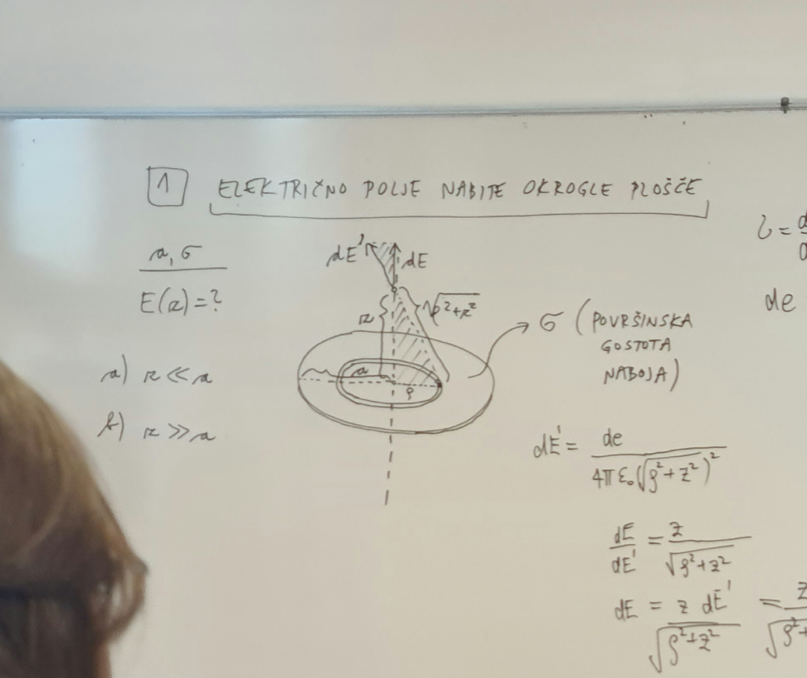
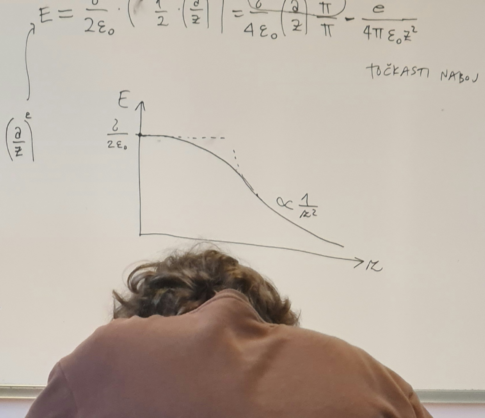

1. vaje iz Elektromagnetnega polja
Table of Contents
1. Električno polje nabite (tanke) okrogle plošče
Izračunaj jakost električnega polja \( E \) vzdolž osi enakomerno nabite okrogle plošče s polmerom \( a \) kot funkcijo oddaljenosti od plošče \( z \). Površinska gostota naboja na plošči je \( \sigma \). Končni rezultat poenostavi za dva posebna primera
- zelo blizu plošče \( z \ll a \)
- daleč stran od plošče \( z \gg a \)
Ustrezna rezultata primerjaj a točko s poljem neskončne ravne plošče oziroma b) s poljem točkastega naboja in skiciraj odvisnost \( E(z) \).
V disku s polmerom \( a \) vzamemo kolobar z notranjim polmerom \( \rho \). Diferencial električnega polja \( \mathrm{d} E' \) v točki \( z > 0 \) nad osjo diska zapišemo po definiciji električnega polja
\begin{equation} \label{eq:1} \mathrm{d} E' = \frac{\mathrm{d} e }{4 \pi \epsilon_0 \left( \sqrt{\rho ^2 + z ^2 } \right) ^2} \end{equation}Ker je problem simetričen, si lahko privoščimo gledati samo za os nad diskom.

Projekcija električnega polja \( \mathrm{d} E' \) na navpično os je definirana preko kosinusa, torej velja razmerje
\[ \frac{\mathrm{d} E}{\mathrm{d} E'} = \frac{z}{ \sqrt{\rho ^2 + z ^2}} \]
Upoštevamo razmerje skupaj z enačbo \ref{eq:1} in dobimo enakost
\begin{align*} \mathrm{d} E &= \frac{z \mathrm{d} E'}{\sqrt{\rho ^2 + z ^2}} \\ &= \frac{z}{\sqrt{\rho ^2 + z ^2}} \frac{\mathrm{d} e}{ 4 \pi \epsilon_0 \left( \rho ^2 + z ^2 \right)} && \sigma = \frac{\mathrm{d} e}{\mathrm{d} S} = \frac{\mathrm{d} e}{2 \pi \rho \,\mathrm{d} \rho} \\ &= \frac{z \sigma 2 \pi \rho \, \mathrm{d} \rho}{\left( \rho ^2 + z ^2 \right)^{\frac{3}{2}} 4 \pi \epsilon_0} \\ &= \frac{z \sigma}{2 \epsilon_0} \frac{\rho}{\left( \rho ^2 + z ^2 \right)} \, \mathrm{d} \rho \end{align*}\( 2 \pi \rho \, \mathrm{d} \rho \) označuje površino našega kolobarja. Dobljeni rezultat integriramo po radiju našega diska, kjer opravimo substitucijo \( u = \rho ^2 + z ^2 \).
\begin{align*} E &= \frac{z \sigma}{2 \epsilon_0} \int\limits_0^a \frac{\rho}{\left( \rho ^2 + z ^2 \right)^{\frac{3}{2}}} \, \mathrm{d} \rho \\ &= \frac{z \sigma}{2 \epsilon_0} \int\limits_{z ^2}^{a ^2 + z ^2} \frac{1}{u^{\frac{3}{2}}} \frac{\mathrm{d} u}{2} \\ &= \frac{z \sigma}{4 \epsilon_0} \left. \left( - 2u^{- \frac{1}{2}} \right)\right|_{z ^2}^{a ^2 + z ^2} \\ &= \frac{z \sigma}{2 \epsilon_0} \left( -2 \left( a ^2 + z ^2 \right)^{- \frac{1}{2}} + 2 \left( z ^2 \right)^{- \frac{1}{2}} \right) \\ &= \frac{z \sigma}{2 \epsilon_0} \left( - \frac{1}{\sqrt{a ^2 + z ^2}} + \frac{1}{z} \right) \\ &= \frac{\sigma}{2 \epsilon_0} \left( 1 - \frac{z}{\sqrt{a ^2 + z ^2}} \right) \end{align*}V primeru, ko je \( z \ll a \) je električno polje enako
\[ E = \frac{\sigma}{2 \epsilon_0} \]
kar je polje neskončno ravne plošče (ko si blizu sredine ploskve, roba ploskve ne vidiš).
V primeru, ko \( z \gg a \), pa zapišemo razmerje
\[ \frac{a}{z} \ll 1 \]
Naš izračunan rezultat razvijemo preko Taylorja in uporabimo
\[ (1 + \epsilon)^p = 1 + p \epsilon + \binom{p}{2} \epsilon ^2 + \ldots \]
in tako je naš razvoj enak
\begin{align*} E &= \frac{\sigma}{2\epsilon_0} \left( 1 - \frac{z}{\sqrt{a ^2 + z ^2}} \right) \\ & = \frac{\frac{z}{z}}{\sqrt{\left( \frac{a}{z} \right) ^2 + 1}} \\ &= \frac{1}{\left( \left[ \frac{a}{z} \right] ^2 + 1 \right)^{\frac{1}{2}}} ^{- \frac{1}{2}} \\ &\approx 1 - \frac{1}{2} \left( \frac{a}{z} \right) ^2 \end{align*}Električno polje je tako enako
\begin{align*} E &= \frac{\sigma}{2 \epsilon_0} \left( \frac{1}{2} \left( \frac{a}{z} \right)^2 \right) \\ &= \frac{\sigma}{4 \epsilon_0} \left( \frac{a}{z} \right) ^2 \frac{\pi}{\pi} \\ &= \frac{e}{4 \pi \epsilon_0 z ^2} \end{align*}kar je izraz za točkasti naboj.

2. Električno polje nabite ravne plošče z režo
Iz velike tanke izolatorske plošče, ki je enakomerno nabita z nabojem površinske gostote \( \sigma \), izrežemo ravno režo širine \( a \), kakor prikazuje slika.
- Določi jakost električnega polja \( E \) v ravnini, ki je pravokotna na ploščo in poteka skozi sredino reže kot funkcijo oddaljenosti \( z \) od ravnine plošče.
- Pod a) dobljeni izraz za \( E \) poenostavi za primera majhnih in veliki \( z \) (glede na \( a \)) ter skiciraj odvisnost \( E(z) \)
Uporaben razvoj za \( x > 0 \):
\[ \mathrm{arctg} \frac{1}{x} = \frac{\pi}{2} - x + \ldots \]
Ravne plošče bomo aproksimirali z veliko količino vzporedni žic, zato si poglejmo
električno polje nabitega ravnega vodnika. Raven vodnik zapremo s končnim (zelo dolgim) valjem - zaradi njegove dolžine, zanemarimo osnovne ploskve valja, ko integriramo preko Gaussovega zakona
\[ e = \epsilon_0 \oint\limits_{}^{} \vec{E} \, \mathrm{d} \vec{S} \]
To pomeni, da so vse silnice električnega polja pravokotne na žico in za ploščino vzamemo površino valja.
\[ e = \epsilon_0 \int\limits_{}^{} E \, \mathrm{d} S = \epsilon_0 E S = \epsilon_0 E 2 \pi r l \]
Električno polje nabitega vodnika je tako
\begin{equation} \label{eq:2} E = \frac{e}{2 \pi \epsilon_0 l } \frac{1}{r} \end{equation}Električno polje v ravnini kaže zgolj navzgor, saj se komponenti vzporedni s ploščama odštejeta in ostane samo pravokotna.
Razmerje kosinusa zapišemo po definiciji
\[ \frac{\mathrm{d} E}{\mathrm{d} E'} = \frac{z}{\left( x ^2 + z ^2 \right)^{\frac{1}{2}}} \]
Električno polje (neskončne) žice pa je
\[ \mathrm{d} E' = \frac{\mathrm{d}e}{2 \pi \epsilon_0} \frac{1}{\left( x ^2 + z ^2 \right)^{\frac{1}{2}}} \]
Enačbi združimo skupaj in upoštevamo definicijo površinske gostote naboja, ki nam pokrajša dolžino \( l \), da dobimo
\[ \mathrm{d} E = \frac{z}{\left( x ^2 + z ^2 \right)^{\frac{1}{2}}} \frac{\mathrm{d} x \sigma}{2 \pi \epsilon_0 \left( x ^2 + z ^2 \right)^{\frac{1}{2}}} \]
Zadevščino integriramo in da upoštevamo obe strani plošče zaradi simetrije pomnožimo s faktorjem \( 2 \):
\begin{align*} \int\limits_0^E \, \mathrm{d} E &= \int\limits_{\frac{a}{2}}^{\infty} \frac{z}{\left( x ^2 + z ^2 \right)^{\frac{1}{2}}} \frac{2 \sigma}{2 \pi \epsilon_0 \left( x ^2 + z ^2 \right)^{\frac{1}{2}}} \, \mathrm{d} x \\ &= \frac{z \sigma}{\pi \epsilon_0} \int\limits_{\frac{a}{2}}^{\infty} \left( x ^2 + z ^2 \right)^{-1} \, \mathrm{d} x \\ &= \frac{1}{z} \int\limits_{\frac{a}{2}}^{\infty} \frac{\mathrm{d} \frac{x}{z}}{\frac{z ^2}{z ^2} + \frac{x ^2}{z ^2}} \\ &= \frac{1}{z} \left. \mathrm{arctg} \frac{x}{z} \right|_{\frac{a}{2}}^{\infty} \\ &= \frac{1}{z} \left( \frac{\pi}{2} - \mathrm{arctg} \frac{a}{2z} \right) \end{align*}Električno polje je tako
\[ E = \frac{\sigma}{\pi \epsilon_0} \left( \frac{\pi}{2} - \mathrm{arctg }\frac{a}{2z} \right) \]